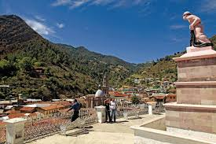
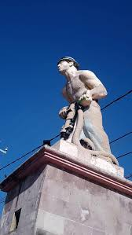
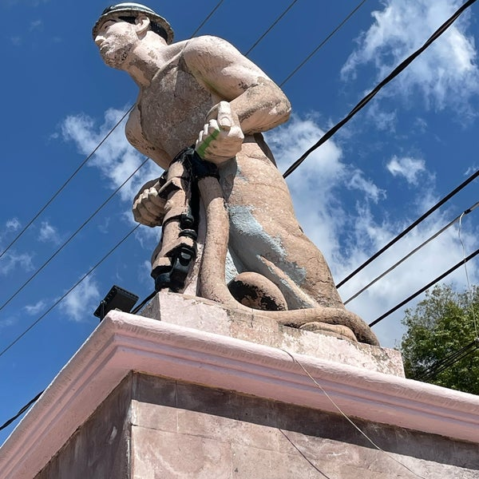
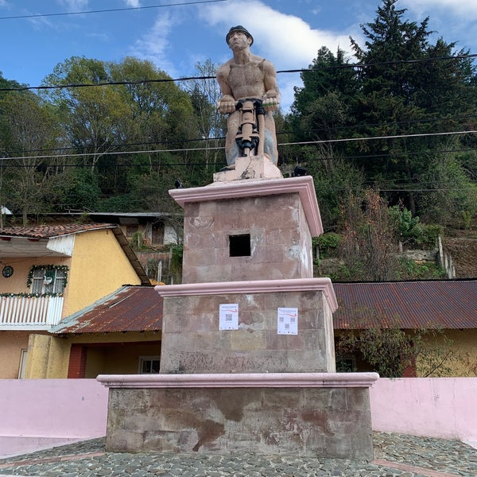

El pasado minero de Angangueo se recuerda con este monumento, ubicado en lo alto del pueblo. Quien sube a conocerlo más de cerca obtendrá una vista maravillosa de la Parroquia de San Simón Apóstol. El 11 de julio se vuelve escenario de la celebración al minero.



